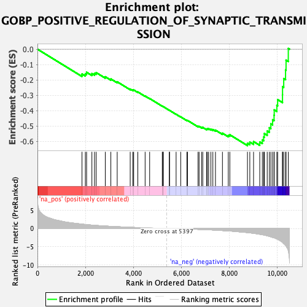
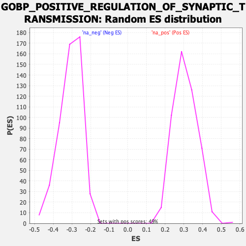

| Dataset | qlf.KOd4vsWTd4_gsea_score |
| Phenotype | NoPhenotypeAvailable |
| Upregulated in class | na_neg |
| GeneSet | GOBP_POSITIVE_REGULATION_OF_SYNAPTIC_TRANSMISSION |
| Enrichment Score (ES) | -0.6272637 |
| Normalized Enrichment Score (NES) | -2.0414507 |
| Nominal p-value | 0.0 |
| FDR q-value | 0.006320771 |
| FWER p-Value | 0.037 |

| SYMBOL | RANK IN GENE LIST | RANK METRIC SCORE | RUNNING ES | CORE ENRICHMENT | |
|---|---|---|---|---|---|
| 1 | TNF | 1857 | 1.180 | -0.1614 | No |
| 2 | EIF2AK4 | 1997 | 1.081 | -0.1598 | No |
| 3 | YTHDF1 | 2049 | 1.042 | -0.1504 | No |
| 4 | ADORA2A | 2270 | 0.912 | -0.1589 | No |
| 5 | AGER | 2378 | 0.862 | -0.1572 | No |
| 6 | PRNP | 2448 | 0.833 | -0.1524 | No |
| 7 | NF1 | 2828 | 0.658 | -0.1795 | No |
| 8 | ZDHHC3 | 3060 | 0.576 | -0.1937 | No |
| 9 | NPTN | 3325 | 0.483 | -0.2123 | No |
| 10 | MAPK1 | 3867 | 0.325 | -0.2596 | No |
| 11 | SERPINE2 | 3975 | 0.297 | -0.2658 | No |
| 12 | AKAP5 | 4012 | 0.285 | -0.2653 | No |
| 13 | ABL1 | 4184 | 0.246 | -0.2782 | No |
| 14 | CRTC1 | 4489 | 0.171 | -0.3050 | No |
| 15 | STAU1 | 4678 | 0.128 | -0.3212 | No |
| 16 | STX3 | 5204 | 0.034 | -0.3710 | No |
| 17 | KCTD13 | 5232 | 0.030 | -0.3731 | No |
| 18 | DLG4 | 5247 | 0.028 | -0.3741 | No |
| 19 | FMR1 | 5497 | -0.015 | -0.3977 | No |
| 20 | DTNBP1 | 5508 | -0.016 | -0.3984 | No |
| 21 | ZDHHC12 | 5781 | -0.061 | -0.4236 | No |
| 22 | MECP2 | 5973 | -0.092 | -0.4406 | No |
| 23 | CLSTN1 | 6230 | -0.141 | -0.4632 | No |
| 24 | RAPSN | 6256 | -0.147 | -0.4635 | No |
| 25 | RAB3GAP1 | 6696 | -0.249 | -0.5021 | No |
| 26 | HAP1 | 6740 | -0.258 | -0.5027 | No |
| 27 | KIF5B | 6842 | -0.285 | -0.5084 | No |
| 28 | RASGRF2 | 6893 | -0.300 | -0.5091 | No |
| 29 | ZDHHC2 | 7050 | -0.342 | -0.5193 | No |
| 30 | TYROBP | 7088 | -0.354 | -0.5180 | No |
| 31 | PLK2 | 7139 | -0.368 | -0.5177 | No |
| 32 | APP | 7231 | -0.392 | -0.5210 | No |
| 33 | PRKCE | 7313 | -0.422 | -0.5229 | No |
| 34 | GSK3B | 7422 | -0.460 | -0.5269 | No |
| 35 | CX3CR1 | 7713 | -0.575 | -0.5467 | No |
| 36 | NCSTN | 7956 | -0.677 | -0.5606 | No |
| 37 | APOE | 8021 | -0.702 | -0.5570 | No |
| 38 | CCR2 | 8756 | -1.121 | -0.6118 | Yes |
| 39 | PAIP2 | 8854 | -1.205 | -0.6045 | Yes |
| 40 | VAMP2 | 9010 | -1.325 | -0.6011 | Yes |
| 41 | STXBP1 | 9268 | -1.585 | -0.6038 | Yes |
| 42 | PRKCZ | 9376 | -1.704 | -0.5906 | Yes |
| 43 | GLUL | 9431 | -1.776 | -0.5713 | Yes |
| 44 | CDK5 | 9458 | -1.811 | -0.5488 | Yes |
| 45 | PTEN | 9580 | -2.009 | -0.5327 | Yes |
| 46 | ARC | 9667 | -2.162 | -0.5112 | Yes |
| 47 | PTK2B | 9731 | -2.282 | -0.4858 | Yes |
| 48 | STX1A | 9804 | -2.438 | -0.4591 | Yes |
| 49 | PINK1 | 9865 | -2.552 | -0.4297 | Yes |
| 50 | BAIAP3 | 9872 | -2.562 | -0.3949 | Yes |
| 51 | ARRB2 | 9982 | -2.871 | -0.3658 | Yes |
| 52 | MPP2 | 10015 | -2.939 | -0.3284 | Yes |
| 53 | ITPR3 | 10217 | -3.775 | -0.2956 | Yes |
| 54 | SQSTM1 | 10219 | -3.778 | -0.2437 | Yes |
| 55 | SLC4A8 | 10268 | -4.123 | -0.1915 | Yes |
| 56 | FLOT1 | 10344 | -4.611 | -0.1351 | Yes |
| 57 | RGS14 | 10365 | -4.772 | -0.0713 | Yes |
| 58 | LGMN | 10459 | -6.161 | 0.0047 | Yes |
